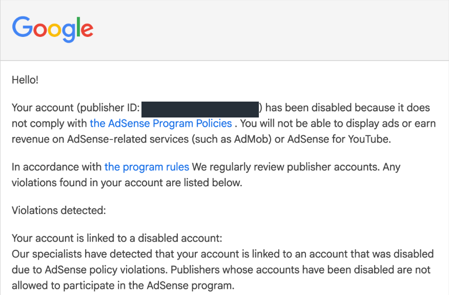
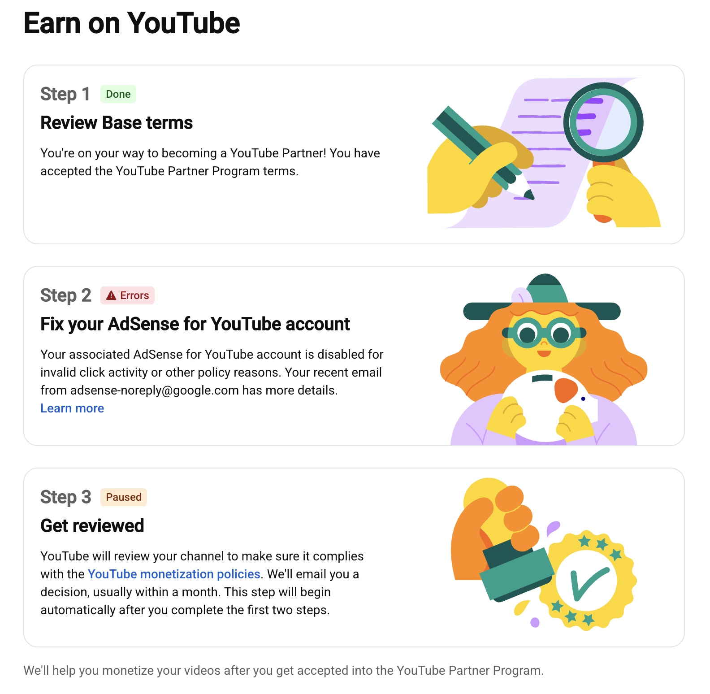
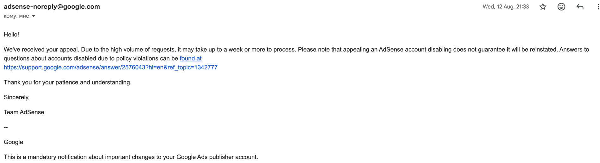
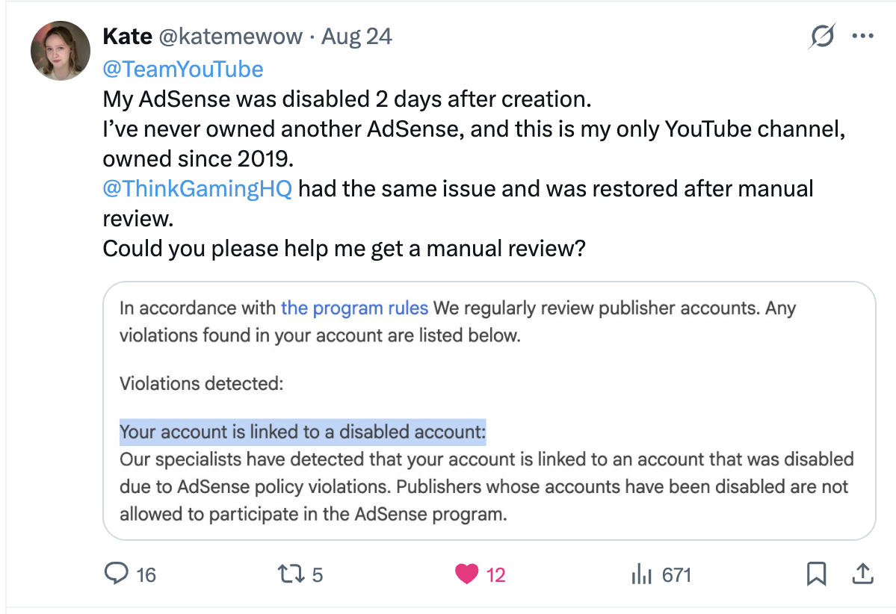
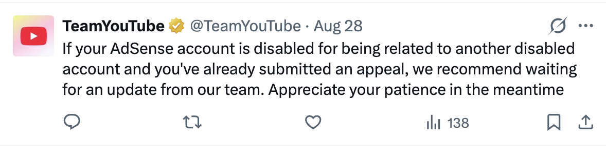
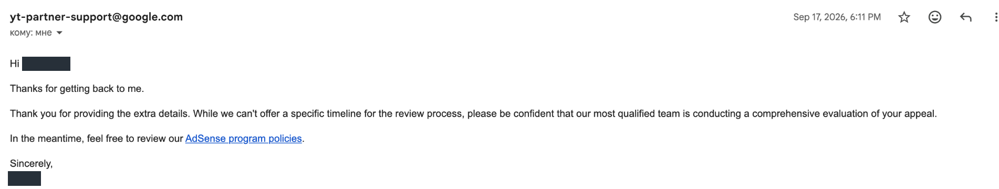
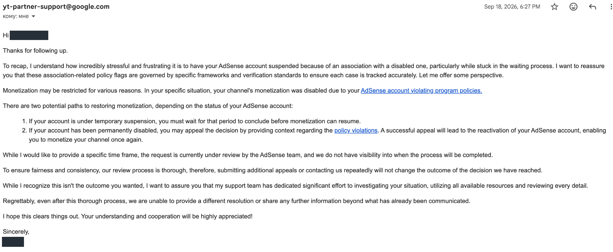
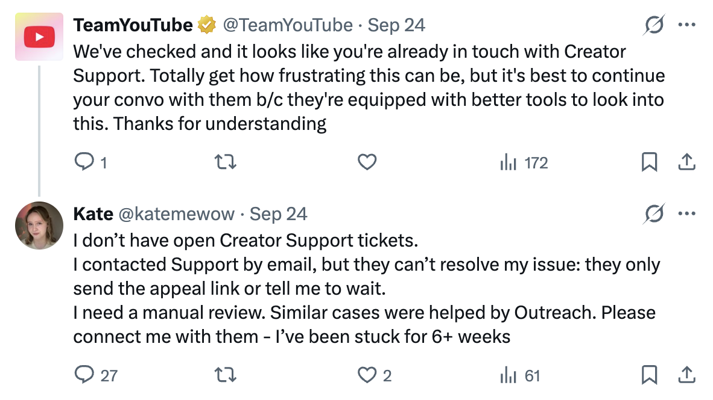

My first AdSense account was disabled by Google. Here’s what happened
On 11 August 2026, I received an unexpected email from Google: my AdSense account had been disabled because, according to the message, it was “linked to an account that was disabled due to AdSense policy violations.”

I had only recently started making videos on my first and only YouTube channel. This was my first attempt to apply for monetization and the first AdSense account I had ever created.
I have never created, owned or operated any other AdSense account – including one disabled for policy violations. That is why I believe this decision was a mistake.
I submitted an appeal and received an automatic confirmation email. More than two months later, I still haven’t received an answer to the appeal. Support has replied to my messages, but I don’t know whether anyone has looked into the connection mentioned in that first email.
I’ve put this page together to tell the full story: how I got here, what I’ve tried, some of the replies I received, and other creators’ experiences with a similar problem. If you have been through this yourself, or can help the story reach someone who can look into it, I would be very grateful. Please, I need your help.
For the YouTube / AdSense team
This is my first and only AdSense account, created through YouTube Studio for @katemewow, the channel I have owned since 2019. I create its content myself and registered AdSense using my own legal identity.
I haven’t been told which account the notice refers to or what connection has been attributed to me, so I cannot identify or resolve it myself. Given my own account history, I believe the restriction may have been applied to me in error. I would be grateful for a manual, individual review of the alleged association.
In ThinkGaming’s case, YouTube’s Outreach Team helped resolve a similar issue. I would be very grateful if the team could also take a look at mine.
You can reach me on X: @katemewow
A little background
If you’re not familiar with how YouTube monetization works, there are two services involved. The YouTube Partner Program (YPP) lets eligible creators who pass its review earn money through features such as advertising. AdSense for YouTube is the Google service that handles their payments.
My problem began while setting up AdSense. My first and only account was disabled because of an alleged connection to another disabled account. As a result, I cannot move forward with joining the YouTube Partner Program.
I had never been accepted into YPP or earned YouTube advertising revenue before this happened.
How it started
I have owned this channel since 2019. For years, I simply used YouTube as a viewer. On 15 May 2026, after months of preparation, I published my first video.
After years working in software development, I wanted to create a personal science-communication project: video essays about how our brains work, told through research and real human stories. I spent time shaping each script and looked for distinctive places to film.
Then my third video, about the Matthew Effect, reached around 195,000 views. I was thrilled that something I had made connected with so many people. It gave me the confidence to keep going. 💕
You can watch my video about the Matthew Effect here.
Within my first three months of making videos, I reached the subscriber and watch-time requirements to apply. I accepted the terms in YouTube Studio and followed its link to create my first and only AdSense account, using my own legal identity.
I expected to complete the setup and move on to channel review. Instead, I received an account-disablement email. This is where my application has been stuck ever since:

I had never previously created, owned or operated another AdSense account. I wasn’t told which account the notice referred to or what connection Google had found. From what I know of my own history, I believe the restriction was applied to me incorrectly.
What I tried
The appeal
I submitted an official appeal the following day, on 12 August. I explained that this was my first account and asked for the alleged association to be checked. An automatic email confirmed that Google had received it:

More than two months have passed since that confirmation, and I still haven’t received an answer to the appeal.
The appeal instructions ask publishers to make sure they have addressed any policy violations. I genuinely want to resolve the problem, but I don’t know how to investigate a connection to an account I cannot identify. I can explain my own history and provide documents; I cannot see the information Google used to establish that link.
Support chat
I contacted support through chat several times. In every conversation, I explained that I had already submitted an appeal and was trying to get the association reviewed individually.
The answers kept coming back to the same few options: submit an appeal, wait without a timeframe, or accept that nothing more could be done. At different points, I was encouraged to submit again and then told that additional appeals would not help and could slow things down.
I kept explaining that I had already followed the appeal process. I wasn’t asking where to find the form; I was trying to understand what I could do when the only answer was to keep waiting. That wait has now stretched from weeks into months.
Posting on X
I also started posting on X and asking @TeamYouTube for help. I explained that I had never owned another AdSense account, that this was my only channel, and that I was ready to provide whatever information would help someone look into it.
One of my early posts reached more than 650 views. For a moment, I hoped that more people seeing it might help me get somewhere.

Most of the replies told me to keep waiting for the appeal, or to continue in direct messages and then by email. Here is one of the responses I received:

The email exchange
After about a week of waiting and another public follow-up, I was contacted by email. I was relieved: it felt as though I might finally be able to explain the whole situation to someone who could help.
Over the next several days, I described the history of my channel and AdSense account, shared similar cases, and repeatedly asked whether my case could be passed to a specialist who could review the association. I offered identity and payment information and sent an official document confirming where I live.
I sent that document because I had read accounts from other publishers who wondered whether a shared or virtual-office address had contributed to their problem. I rent an apartment in Barcelona; it is not a virtual office. I wondered whether the address could previously have appeared on someone else’s account, so I provided a Barcelona City Council document showing my name, address and the date I registered there. I don’t know whether the address played any role. I was trying to give support anything that might help.
Yet the replies kept returning to the appeal and the AdSense policies. On 17 September, I was told that my appeal was being reviewed, with no timeframe:

The next reply was even harder to understand. It said the request was still under review, but also referred to a decision already reached and said that further contact would not change it:

I couldn’t tell whether my appeal was still being considered or whether the case had already been decided. Nothing in those replies told me whether the information I had sent had helped someone reassess the alleged connection.
I don’t blame the individual people answering my emails. I had explained everything as carefully as I could, but I was still being told to wait, with no idea of how long that might be or what else I could do. From those replies, it seemed that the support team I had reached did not have the tools or authority to resolve this AdSense issue.
Back to X
After the email exchange failed to resolve anything, I posted again. I explained that I had followed the process I’d been given, but was still receiving the same advice to appeal and wait.
TeamYouTube replied that I was already in contact with Creator Support and should continue the conversation there. That was the conversation I had just explained hadn’t helped.

You can read that discussion on X, along with my earlier post and another follow-up.
I have now spent more than two months explaining the same problem in different places, only to receive the same replies without getting any closer to a resolution. Being told to keep waiting or submit another appeal has not resolved the problem.
Despite all of this, I have kept making videos. My two most recent uploads have also received a warm response, which gives me a reason to keep going – even while I have no idea whether I will ever be able to earn advertising revenue from this work. I hope that putting the whole story here will help it reach someone who can look into what happened.
Other people with a similar problem
While trying to understand what had happened, I found other creators describing the same “related to a disabled account” message.
The first story that gave me hope was ThinkGaming’s account of his AdSense problem. He writes that his account was eventually restored after YouTube’s Outreach Team looked into it. I contacted him myself, and he kindly replied to several of my posts on X. I’m grateful for his help, although my own case remains unresolved.
I know our circumstances are not identical, but his experience gives me hope that YouTube’s Outreach Team might also be able to help with mine.
Another creator, Toaster226, also reported getting his account back and shared a video about what happened. Those stories are why I keep asking for someone to look into my particular case.
On Google’s own help forums
I found similar stories on Google’s own help forums, too. In this YouTube Help Community discussion, a creator describes their first AdSense account being disabled within days. A Diamond Product Expert acknowledges the difficulty of challenging a connection when Google does not disclose which account is involved or how the two are related.
In another thread about an appeal pending for almost 90 days, a Product Expert tried escalating the case, then reported that their Google contacts had no control over the account-disablement or review process. These are community experts’ replies, rather than formal decisions from Google. Still, it was painful to find the same struggle on Google’s own forums: creators asking for a way forward, and the people trying to help them unable to resolve it.
On Reddit
I also found these discussions on Reddit:
- AdSense disabled for “related to a disabled account”
- Disabled from AdSense
- AdSense disabled by mistake at 75k subscribers
- AdSense disabled without a clear reason – stuck in an appeal loop
Reading them, I recognised the same frustration: trying to challenge a connection you cannot see, then struggling to reach someone who can investigate it. I don’t know how every case ended, but I wish there were a clearer way through this for a new creator.
Why this matters to me
This is my first personal project after leaving my home country because of the geopolitical conflict. I moved to Spain on a digital nomad visa, went through burnout, and spent a long time reconsidering what I wanted to do with my life.
I had built a career in software development. You can find more about that part of my life on LinkedIn. But making science videos was something I had wanted to try for years. Eventually, I decided to take it seriously rather than keep putting it off.
There was so much work before I published anything: choosing the channel’s direction, researching stories, writing scripts, finding places to film. When people responded to my third video, I was incredibly happy. I was still a beginner, but I could see that the work meant something to people other than me.
I know that advertising income from a small channel may not be a large amount. It still matters to me. I want to be able to build this work into something sustainable, and the restriction affects more than the videos I have already made. As long as it remains, it also blocks my route to earning through AdSense from future videos.
I cannot simply open a replacement account: Google’s rules prohibit rejoining that way after a policy disablement. I am not trying to get around the restriction or create another channel to avoid it. I want someone to look at what happened to my own account.
What feels so unfair is how early this happened. My channel has not been banned. I had never earned advertising revenue, and I believe I had followed the rules. Yet an alleged connection I cannot identify now stands between me and earning from this work – not just from my first few videos, but from everything I make next.
Starting another channel would not remove an AdSense restriction attached to me as a publisher, and opening a new AdSense account to get around it would break the rules. Unless the restriction is lifted, that route to monetization stays closed. It is hard to accept that what I believe is a mistake could have such a lasting effect on a project I had only just begun.
I understand why Google needs to protect advertisers and prevent abuse. I also hope there is room to look again when a creator believes something has gone wrong. I’m still making videos. I just don’t want this unresolved restriction to decide the future of a project I have only just begun.
How you can help
Thank you for reading all of this. I’ve tried the support routes available to me, and I’m sharing the story because I hope it can reach someone who is able to look into the association.
Please share this page, or share one of my posts on X. If you know someone who could help get my case to the right team, or have experienced the same problem yourself, I would really appreciate hearing from you.
Even taking the time to read and pass this on means a lot to me.
Contact
Ekaterina
YouTube: @katemewow
X / Twitter: @katemewow
A few common questions
Is your YouTube channel still online?
Yes. The channel is still online, and I continue to publish videos. The problem is with my first AdSense account, which prevents my first YPP application from moving forward.
Had you ever had another AdSense account?
No. This was the first one I had ever created. I had never owned or operated another AdSense account, including an account disabled for policy violations.
Do you know what caused the connection?
No. The email gives the reason as a link to another disabled account, but I haven’t been told which account or what the connection is. I have explained my own account history to support and provided information that I hoped would help.
Why not just start a new channel?
The restriction is on my AdSense account, not just on one YouTube channel. Starting again would not make me eligible to receive payments through AdSense while it remains in place. Google does not allow publishers disabled for policy reasons to rejoin by opening a new AdSense account.
A replacement account would also have a real connection to a disabled account – this one – because both would be mine. I don’t want to create a genuine policy problem while trying to resolve what I believe is a mistake. I want to resolve the issue with my original account, not work around it.
What are you asking Google to do?
I’m asking for a manual, individual review of the alleged association, taking my own identity and account history into account.